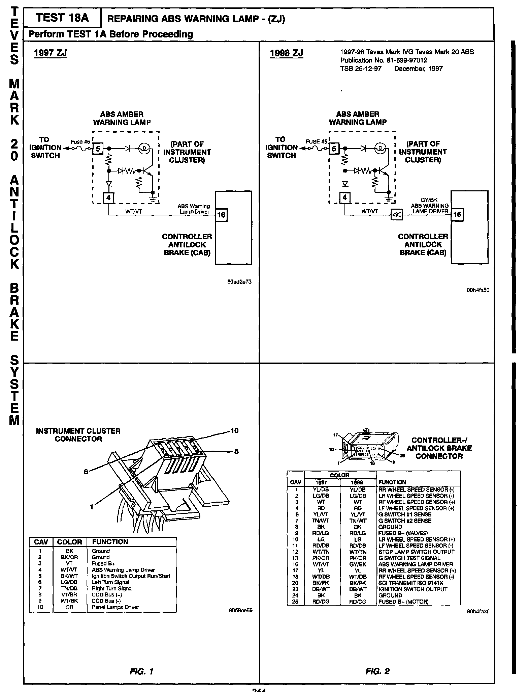
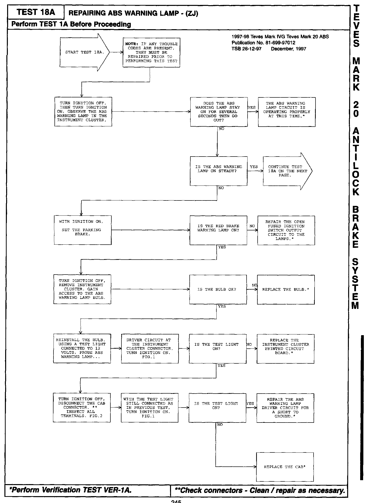

Brakes - Teves Mark IV/Teves Mark 20 ABS Revisions
NUMBER: 26-12-97FGROUP: Miscellaneous
DATE: December, 1997
REVISIONS ARE HIGHLIGHTED WITH BLACK BARS IN THE MARGIN
Models:
1997-1998 Teves Mark IV, Teves Mark 20 ABS Diagnostic Manual - Publication Number - 81-699-97012
DESCRIPTION OF CHANGES
Revisions to the ABS warning light procedure
q P:

244
Jq P:

245